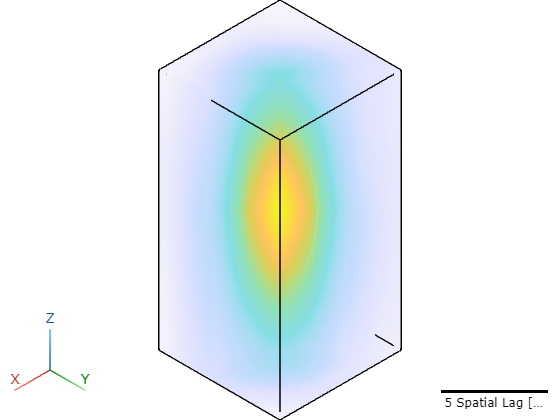
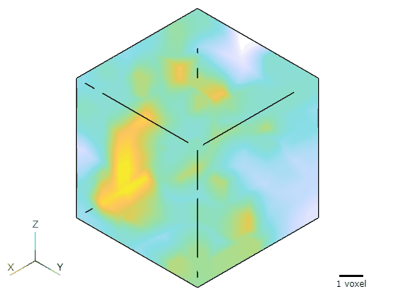
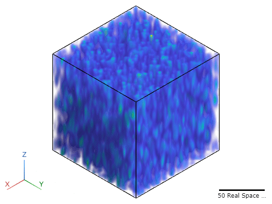
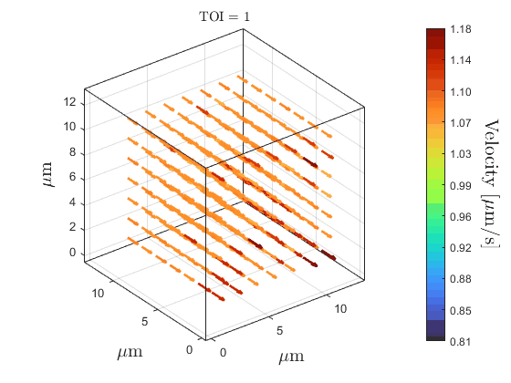
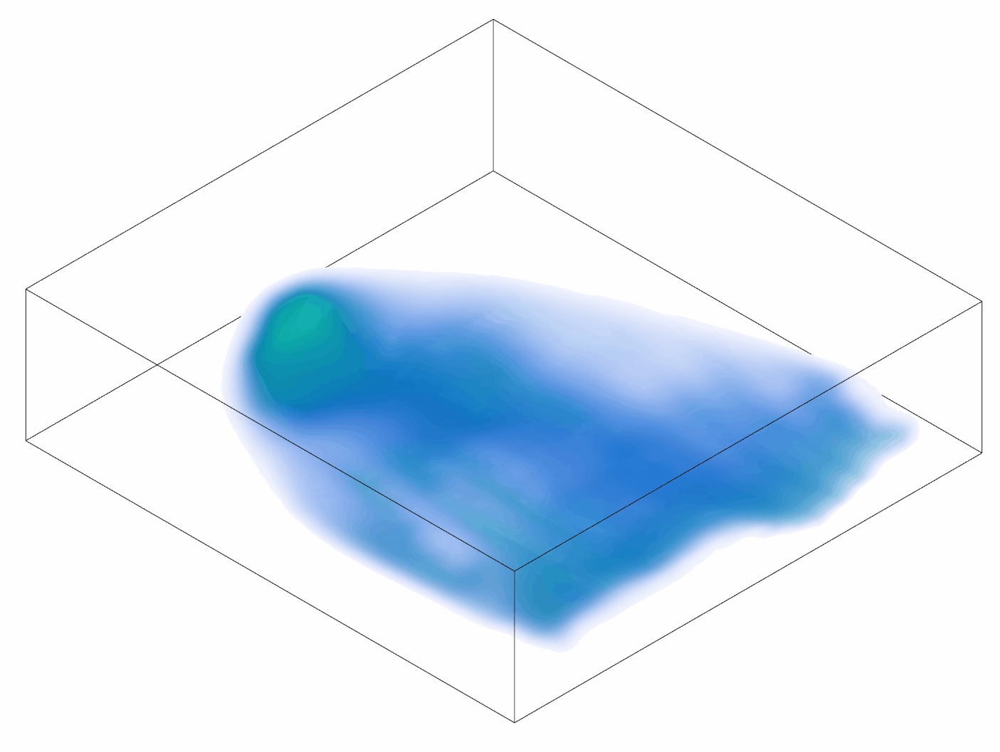
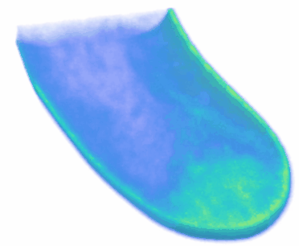

vSTICS Poster Visualizations
1. Flow Simulation




2. Diffusion and Flow Simulation
Autocorrelation Function Views


Density, Diffusion, Intensity, and Velocity Maps


3. MitoTracker Green Mitochondrial Labelling


4. FM1-43 Vesicle Labelling

